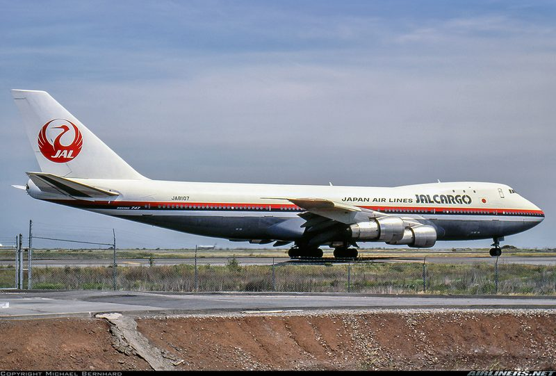

A Japan Air Lines freighter was three hours out of Iceland, empty except for wine and cargo, when its captain noticed lights that would not fall behind. What followed is the most heavily documented pilot UAP encounter in the history of civil aviation, and it cost the man who reported it his career.
All times in this case file are local Alaska time on 17 November 1986. This was a cargo flight: no passengers, three people aboard, and a freight deck full of Beaujolais Nouveau bound for Tokyo.

Japan Air Lines Cargo Flight 1628 was a long freight run: Paris Charles de Gaulle to Tokyo Narita, routed the long way over the pole with technical stops at Keflavík in Iceland and Anchorage in Alaska. The aircraft was a Boeing 747-246F, the freighter version of the 747-200, and on the leg that matters it was cruising at 35,000 feet across eastern Alaska in the dark.
In command was Captain Kenjyu Terauchi, a former fighter pilot and one of the airline's senior 747 captains, described in contemporaneous reports as a veteran of some twenty-nine years of flying. Beside him was First Officer Takanori Tamefuji. Behind them at the engineer's panel sat Flight Engineer Yoshio Tsukuba.
Three professional aircrew, on the flight deck of a freighter, with nothing ahead of them but several more hours of Alaskan darkness.
At 17:11 local time, somewhere over eastern Alaska, Terauchi noticed lights off to his left that were keeping station with the aircraft.
At first the captain took them for military traffic, or for the lights of another airliner on a converging course. That assumption did not survive long. Aircraft lights fall behind, or draw ahead, or cross. These did neither. They held position relative to a Boeing 747 travelling at roughly 500 knots, and they held it for minutes at a time.
Terauchi later described two objects, one above the other, sitting off the 747's port side. He reported that they moved in a way he had no vocabulary for: stopping, starting, and swapping position with a suddenness that had nothing to do with how aircraft behave. At one point, by his account, the pair of them swung directly in front of the freighter and lit up the flight deck.
“The thing was flying as if there was no such thing as gravity.”
— Captain Kenjyu Terauchi, describing the objects' movement in his account to investigatorsWhat separates this from most pilot sightings is that Terauchi was not alone on that flight deck. First Officer Tamefuji and Flight Engineer Tsukuba both saw the lights. All three men were interviewed afterwards, and all three described the same thing, though in the careful, hedged language of professional aircrew who understood exactly how the report would be received.
The two smaller objects eventually departed. What Terauchi reported next is the part of his account that has been argued over for forty years.
With the smaller lights gone, the captain reported that he became aware of a far larger object behind and to the left of the aircraft, silhouetted against the night sky. He described it as enormous — in his own words, roughly twice the size of an aircraft carrier.
This is the point where the case divides people, and it is worth being plain about why. An estimate of size requires an estimate of distance, and at night, at 35,000 feet, against a starfield, a pilot has nothing to range against. Terauchi was an experienced aviator making an honest report of what he perceived. That is not the same as a measurement, and the case file does not treat it as one.
What can be said is narrower and more interesting: something was reported by three crew members, over a sustained period, and at least some of it appeared on radar.
Terauchi did what the system asks a pilot to do with something he cannot identify: he told air traffic control.
The controlling agency was Anchorage Air Route Traffic Control Center, the FAA facility responsible for the enormous block of airspace over Alaska. Terauchi reported traffic he could not identify. Controllers checked their scopes.
At various points during the encounter, controllers reported seeing a return in the vicinity of Flight 1628 that they could not account for, and the crew reported a target on the aircraft's own weather radar. This is the evidentiary spine of the whole case: not the size estimate, not the description, but the fact that people on the ground, looking at instruments, were engaged with the problem in real time.
It is also where the case gets genuinely complicated, and where a lot of retellings stop being careful. The initial radar observations were real and are documented. The FAA's subsequent technical analysis of those returns reached a more deflationary conclusion — that the unexplained return was most consistent with an artefact, an “uncorrelated primary and beacon target,” the radar equivalent of a ghost image of Flight 1628 itself.
Both of those things are in the record. A page that gives you only the first is selling you something; a page that gives you only the second is doing the same in the other direction.
The encounter did not resolve quickly. By the crew's account it ran for the better part of fifty minutes, and Terauchi eventually asked to get away from whatever was out there.
Terauchi reported that the object stayed with the aircraft over a long stretch of the route — he put it at roughly 400 miles. Anchorage Center offered the crew course and altitude changes to see whether the contact would follow. According to the crew's account, it did: descents, turns, a 360-degree turn, and the lights were still there afterwards.
Read the sequence with a pilot's eye and something stands out. This is a captain, on a routine freight leg, deliberately manoeuvring a heavy 747 at night to test a hypothesis, while talking to a federal controller on a recorded frequency. Whatever else is true about this case, that is not the behaviour of someone constructing a hoax. Every course change he requested is a permanent, timestamped entry in an FAA record he knew would be reviewed.
With a veteran crew reporting a sustained unidentified contact and controllers seeing returns they could not explain, the system did what the system does: it sent somebody to look.
A United Airlines flight in the area was asked to take a look, and military assets were brought into the picture — this was, after all, 1986, over Alaska, in airspace where the identity of unknown traffic was a live strategic question rather than a curiosity.
The detail worth holding onto is not how dramatic the response was. It is that there was a response. Anchorage Center did not file the report and move on. Controllers treated a professional crew's report of unidentified traffic as an operational problem to be resolved, and put other eyes on it.
By the time anyone else was close enough to see what Flight 1628's crew were seeing, there was nothing to see.
As the other aircraft closed on the 747's position, the crew reported that the object was gone. The United flight reported nothing unusual. Whatever had been keeping station with the freighter for the better part of an hour was not there when independent witnesses arrived.
For those who find the case compelling, this is the most frustrating fact in it. For those who don't, it is the most telling. The case file's position is that it is simply what happened, and that it is the reason this encounter has never been resolved in either direction: the only people who saw the object at close range were the three men on that flight deck.
It is a pattern this site has documented before. Frederick Valentich reported an object orbiting above him over the Bass Strait and was never seen again; the only record is the tape of him describing it. Captain Thomas Mantell died chasing something he described over Kentucky. The witnesses who get closest are, repeatedly, the ones least able to corroborate one another.
The FAA investigated. That, in itself, makes this case unusual: a civil aviation regulator formally examining a pilot's report of an unidentified object.
Investigators interviewed all three crew members. Their assessment of the men was not dismissive: the crew were found to be professional and rational, with no question of drink, drugs or impairment. Nobody suggested the three of them had invented it.
The technical conclusion was another matter. On analysis, the FAA did not find that it had confirmed an unknown craft. The agency's position was that the unexplained radar return was most consistent with a data artefact, and the case was closed without a determination that anything solid had been present.
Those two findings sit together uncomfortably, and they are both real: a crew judged entirely credible, and a radar picture the agency decided it could explain another way.
The case file material was later released and is available to read. Substantial portions of the FAA's file on the incident have been published through Freedom of Information Act requests, and anyone who wants to form their own view can go and read the paperwork rather than take anyone's summary of it, including ours. The link is in Sources.
Terauchi's report went public. What happened to him afterwards is the part of this story that pilots tend to remember longest.
After the incident became public, Terauchi was, by widely reported accounts, taken off flying and moved to a desk. He was reportedly reinstated to flying duties later, but the trajectory of a senior international captain's career did not recover. He had done exactly what the reporting system asks of a pilot — report what you see, on the record, to the controlling agency — and the professional consequence was severe.
The effect of that on other aircrew is not hypothetical, and it is the reason this case matters beyond its own facts. Pilots talk. The lesson circulated: report an unidentified object and you may be believed, disbelieved, or quietly grounded, and you have no way of knowing which in advance. For decades afterwards, the rational professional move was to say nothing.
That is the actual cost of how this was handled. Not a conspiracy — an incentive structure. If you want aircrew to report unusual things in the airspace they operate in, and there are excellent flight-safety reasons to want exactly that, then what happened to Kenjyu Terauchi is the worst possible advertisement.
Fifteen years later, the FAA division chief who had handled the case walked into the National Press Club and said something that changed how the incident is read.
John Callahan was the FAA's Division Chief of Accidents, Evaluations and Investigations in Washington during the 1980s. The JAL 1628 case landed on his desk. In 2001 he went public with an account of what happened after it did.
By Callahan's own account, he assembled the radar data and the recordings and briefed officials including representatives of the CIA, the FBI and the Reagan White House. He says that at the end of the briefing he was told the meeting had never taken place, and the material was to be treated as classified. He also says he retained copies of the data, and he has produced material publicly to support the account.
This rests on the testimony of one man. It is not a document release, and it is not corroborated by a second official who was in the room. We flag that plainly because the rest of this case file is built on paperwork, and this section is not. What can be verified independently is that Callahan held the FAA position he says he held, and that he has told this story publicly and consistently, on the record, under his own name, for more than two decades — including at the National Press Club in 2001 and again at a press conference there in 2007.
Callahan has described JAL 1628 as the best-documented case he knows of, and the reasoning is easy to follow: three professional witnesses, a recorded ATC frequency, radar data, and a federal paper trail. Whatever the objects were, this is not a blurry photograph and a story.
Where does that leave the case in 2026? Officially unexplained. The FAA's technical analysis offered a mundane reading of the radar. The crew never withdrew a word of their account. The documents are public. And the most extraordinary claim in the whole affair — that the evidence was gathered up and the briefing disavowed — comes from the federal official who ran the investigation, speaking under his own name.
Modern UAP disclosure — the 2017 Pentagon programme revelations, the Navy's confirmation of its own pilots' footage, congressional hearings — has made the central complaint of the JAL 1628 story mainstream: that aircrew have been seeing things they cannot identify for a very long time, and that the machinery for reporting it has punished them for saying so. Read our wider UAP Files for how that history fits together.
Every factual claim above is anchored to the primary FAA material where possible, and clearly attributed where it rests on testimony instead. All links open in a new tab.
Scanned FAA paperwork on the incident, released under the Freedom of Information Act and mirrored publicly. The crew interviews and the agency's handling of the radar question are in here.
Secondary overview used for the route, aircraft type, timings and Terauchi's description of the objects, each cross-checked against the FAA material.
Analysis drawing on released FAA documents, including the agency's “uncorrelated primary and beacon target” assessment of the radar return and the full crew names.
Background on John Callahan's FAA role and his public account of the post-incident briefing. Presented on this page as testimony, not as documentary evidence.
Our wider archive of pilot, controller and military UAP encounters, including Frederick Valentich and Captain Mantell.
What people ask about JAL 1628. Answers here match the case file above and the documents it is built on.
On 17 November 1986, a JAL Boeing 747 freighter cruising at 35,000 feet over eastern Alaska was shadowed by unidentified lights for the better part of fifty minutes. Captain Kenjyu Terauchi and his two crew members all reported seeing them. The crew reported the objects on their own radar, Anchorage Center observed unexplained returns at points during the event, and other aircraft were sent to look. By the time they arrived, the objects were gone. The aircraft landed safely at Anchorage.
This is the most misreported part of the case. Controllers did observe returns they could not account for during the encounter, and that is documented. But the FAA's later technical analysis concluded the unexplained return was most consistent with an artefact — an “uncorrelated primary and beacon target,” effectively a ghost image of Flight 1628 itself. The agency did not conclude that radar had confirmed a solid unknown object. Both the initial observation and the later analysis are in the record.
Terauchi described two smaller craft and one much larger one, which he estimated at roughly twice the size of an aircraft carrier. It is often repeated as “the size of two aircraft carriers,” which is a distortion of his actual words. It is also worth remembering that estimating the size of an unlit object at night at altitude, with no reference points and no known distance, is effectively impossible.
John Callahan was the FAA's Division Chief of Accidents, Evaluations and Investigations in Washington in the 1980s, and the JAL 1628 case came to him. Going public in 2001, he said he briefed officials including CIA, FBI and Reagan White House representatives, and was afterwards told the meeting had never happened and the data was classified. He says he kept copies. His account is first-hand testimony from the official who ran the investigation, but it is testimony from one person and is not corroborated by a second official.
After the encounter became public he was, by widely reported accounts, grounded and reassigned to a desk job. He was reportedly returned to flying later, but his career as a senior international captain did not recover. He had reported what he saw through the proper channel, and the professional cost was heavy — which is a large part of why so few pilots filed similar reports for decades afterwards.
No. The FAA offered a mundane reading of the radar data and closed the file without determining what the crew saw. No agency has since produced an explanation that accounts for all three witnesses and the duration of the encounter. It remains officially unexplained.